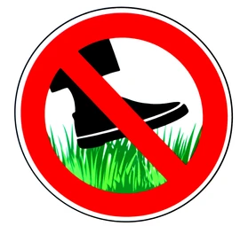

The League of Depression
I once was a happy and cheerful individual, that was until I was peer pressured into
downloading the
literal embodiment of sadness called League of Legends. My friend said to me "Come on Chav
it's a
great game, you'll love it". I have never expierenced such treachery before in my entire
life. This
continued until I was addicted to the drug called league of depression Legends. I
have been
corrupted and begun to do the same thing as my friend... spread the depression. During the
spread of
depression I have observed many side effects of playing League of legends this includes but
is not
limited to: Lack of females, the inability to touch grass, the severe urge to bring others
into this
depression, mild to extreme racism and sadness
The game is not bad despite the community being filled with toxic influences and sheer racisim inducing teammates. The game can be enjoyed with friends in custom modes or even in the featured gamemodes. My friends and I enjoy League of Legends you should join us and play as well :).